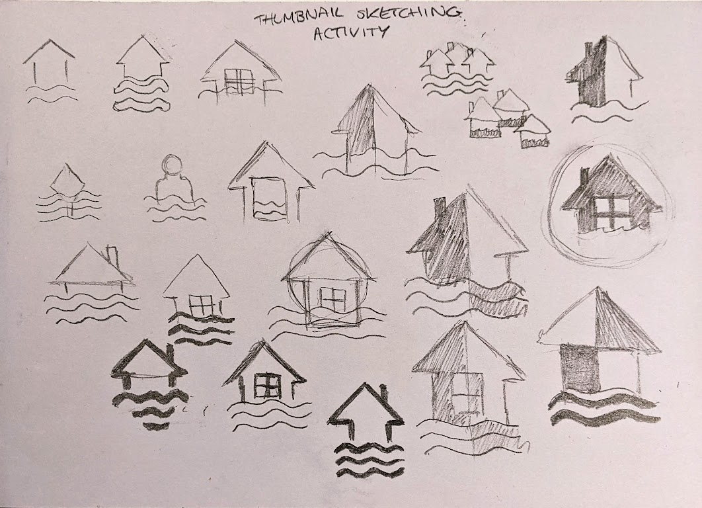

------
Melbourne-based designer Alice Beyer has a background with studies at RMIT in the Bachelor of Design (Digital Media) program. Her interests include communication design, UX design and video editing. Past experience has included the completion of VCE units within Studio Art, and Visual Communication Design, and coordinating a team to create a mural laneway artwork within her school.
------
ARTIST STATEMENT
Perceive the Pattern is a video created through repurposing footage and audio from the sources Computer Chronicles (1992) and The Medium is the Message (1967). The brief for this work was to repurpose footage and audio from various sources to create a narrative video. I attempted to create a new narrative with a horror theme around the dangers of technology. Using Premiere Pro, clips were taken from Computer Chronicles, with audio was taken from The Medium is the Message documentary. Sound effects were then used from FreeSound.com to add the overall theme of the video.FINAL RESULT
PROCESS
------
Within Perceive the Pattern (2022), I chose the theme and genre of horror, as this gave me an interesting and challenging opportunity to transform the audio and visual components I had available into something entirely new. In approaching the relationship between the sonic and visual components in the video, I first needed to understand the visual components I had available. I initially chose to video clips from Virtual Reality - Computer Chronicles (1992), as shots within the video were intriguing to me in how they could be manipulated through editing to change the tone of the video. The idea of technology being something to fear is something I have found interesting in popular shows such as Black Mirror, and movies such as Ex Machina (2015) and Videodrome (1983). I opted to use audio from ‘This is Marshall McLuhan: The Medium is the Message’, as the audio was foreboding and cautionary, which I thought could be paired well with the visuals from the VR video. Through editing, I built a relationship between these two components and attempted to create tension and fear within the viewer.
Specific visual components I took from Computer Chronicles included clips featuring people using the technology, and the virtual worlds that they were exploring. The clip in which the presenter was typing words on the computer screen recurred throughout my video, as I wanted to remove the orginal context from the clip and manipulate it to appear as if the computer was typing a warning to the people. I avoided using sections that focused solely on the presenters, as this would not add to my narrative effectively. The power that sound has to manipulate the tone of a scene was an tool I used throughout the video. With a combination of the narration from ‘The Medium is the Message’, sound effects and music, I attempted to create an ominous feel.
Throughout the video, there were three key chapters I aimed to create. The first chapter was slower than the latter two, introducing the technological interference and the ominous feel around VR technology. The next chapter sees the music start to pick up, and the technological interference becomes more frequent. The final chapter is where the pace reaches the peak, with the interference becoming erratic and the music reaching it's crescendo. The edits throughout become faster, ending with a final cut to black and music winding down to slow the pace and leave the audience considering the ending of the video.
The primary aesthetic choices I made to express my theme of horror were the use of technology visuals juxtaposed with the people using them. These visuals in combination with music and audio contributed to an ominous feel, making the aesthetics of the video feel almost unhinged and erratic.
------
ARTIST STATEMENT
This webpage was created with HTML, CSS and JavaScript, featuring a series of 9 icons, displaying 9 different impacts of climate change, created with Illustrator. The icons were created with flat design techniques in order to depict these impacts in a cohesive way that builds unity between the icons. The icons were first created using sketching techniques and then transferred into Illustrator. The final interations of these icons were then added to an HTML file, with the use of CSS and JavaScript to create a simple webpage. This webpage was then uploaded to GitHub.FINAL RESULT
PROCESS
------
------
The idea behind my suite of icons was to display in a simple visual format the impacts of climate change. I chose this theme due to my interest in environmental issues, as well as the opportunity to create icons with human and environmental visuals to link to these issues. To make a set of concrete visual designs, I first narrowed the prompt down to an idea with clear visual counterparts. By focusing on the impacts of climate change, I gave more clear ideas to the prompt of ‘climate’. This also made other aspects of the design process easier, as for impacts such as ‘flooding’, there are already clear icons used globally on objects such as road signs to indicate this, giving me visual inspiration to work from to create my own version of these icons.

The first stage of the process to create the icons involved rough sketches of each icon idea. To translate these sketches into Illustrator, I took pictures of my sketches, importing these images into Illustrator onto a background layer. I then locked this layer, and using the shape tool made the key shapes within the icons. From here, I used the pen tool to map out more complex shapes. Next, I merged the shapes together to make the icon's core shapes into one object and made the corners of the shapes rounded. I then changed colours and experimented with different combinations.

The use of colour in my icons was considered in order to create a sense of unity within my designs. The use of monochromatic colours in the blue field I found to be most appropriate for this project as the colour blue is often associated with natural elements such as water. I also used blue as the emotions behind blue as associated with sadness or thoughtfulness, appropriate for the tone of the icons. To create some visual interest I used red and orange tones in some icons to create variety, however, I only put these colours in a pattern to continue the sense of unity.
The elements and principles of sound corresponded to the design used in the icons as I made a conscious effort to create unity between the sounds. I tried to avoid making any sounds greatly stand out through balancing audio levels and also tried to make the sounds logical to the visual shapes in the icons, without contrasting too much with the other sound effects.
In finalising my solutions, I went through a number of iterations before deciding on a final solution for each of my nine icons. In developing my icons, my core focuses were on ensuring there was a sense of unity between the icons, both with the colours and shapes used, as well as the scale of the icons within their shape containers. Another of my focuses was on the simplicity of the icons. I wanted to ensure I stayed within the brief of flat design and wanted to keep the aesthetic quality of the icons minimalistic. These were the considerations I made when deciding upon my final solutions for the icons.

------
ARTIST STATEMENT
This is a Unity build of a 3D virtual environment. The environment is split into 3 areas, representing different stages of growing up. The first area shows a fantastical fairy environment, meant to capture the magic of being young. The next area is less fantastical but still has elements of the fantastical world seen in the first area. The third area is the most realistic, however, still features a fantastical element to show that there is still magic as you grow up. The environment was created within Unity, using prefabs from SketchFab and the Unity Asset Store. It features various piano soundtracks and sound effects.FINAL RESULT
PROCESS
------
------
The theme within this virtual environment was around the change of growing up. To unify elements of my virtual environment under this theme, with an emphasis on fantasy, I attempted to use models that looked consistent throughout the environment. However, as a key aspect of the design was the change occurring, I used more colourful models in the ‘fantasy’ area, with more realistic colours appearing later on.
Sound was used in a variety of ways within this project. First, a wind/natural environment sound was added to the player, so that the environment would not feel empty wherever the player was located, and to create a sense of immersion. Additionally, sound effects were attached to the fairies that the player would only hear within a certain radius, to add to the fantasy element of the environment. In each area, I added different music, with the first area having a piano track that was fantastical while also being childish and fun. The next area's music develops into a slightly more mature track, while still having lighthearted energy. The final environment has a piano track that I found to be more melancholy, but still beautiful and peaceful. I used this music to create a journey for the player, creating a different feeling in each environment.
In designing a 3D environment as opposed to a 2D environment, I found a difference in the need to consistently change the angle you are looking at your design, in order to ensure that objects are being placed where intended. I also found that I had more freedom, however with this freedom came more things to consider to make my design solution fit the brief as well as I could. The role of the virtual camera also differed in this assignment compared to the first assignment, as the camera was attached to the player in first person, with the viewer able to control the scene they saw. This makes the camera a far more immersive tool for the viewer, however also meant that it was in my control to make the environment as interesting as possible, from many different angles.
A working prototype was very important to my design process as it created a clear visualisation of the environment, highlighting any flaws with the overall layout. It also allowed me to hear any issues with audio, and see any problems with 3D models or the physics of the environment. From here I was able to fix some issues, improving the overall design of my 3D environment. Through playtesting I discovered that my water was not functioning properly due to a mesh collider. I also found that the bridges sometimes got the player stuck in one location. The audio in the playtest also found some issues with volume and the distance the player could hear the audio. These are issues that I would have been unable to identify without having a player physically explore the environment I had created.
SEMESTER REFLECTION
------
Throughout the semester I have found each assignment interesting, however there have been some aspects I have enjoyed more as a designer than others. For assignnment 1, I enjoyed the challenge of attempting to repurpose footage, however the editing process I found difficult at points.
Assignment 2 I enjoyed creating the icons and using Illustrator, however making the website was difficult, but rewarding. Similarly with assignment 3, I found the process difficult to begin with, but rewarding once I started to understand the basics of Unity. The highlights of the semester for me have been learning the basics of HTML and CSS, as these are skills that I have wanted to try to learn for a few years.
Moving foward as a designer I am interesting in pursuing web based projects, however I have enjoyed learning video editing skills and 3D design.